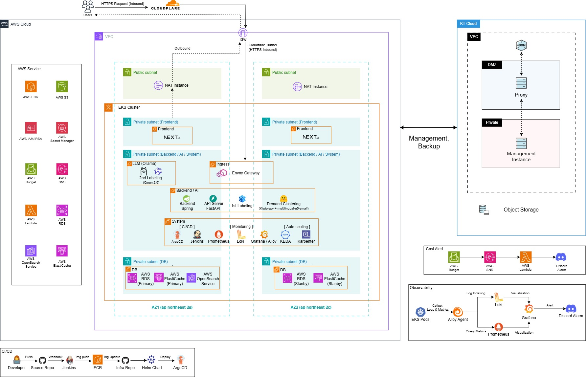

Frontend · Backend · AI가 moongcheap-service Chart 1개를 쓰고, 차이는 base → env → services → overrides 4단계 Values로만 관리한다.
AWS EKS · MULTI-AZ · GITOPS · OBSERVABILITY
MoongCheap
소비자가 수요를 먼저 모으면 판매자가 가격으로 응찰하는 수요 집결형 AI 역경매 공동구매 플랫폼
01
프로젝트 개요

02
내 역할
[TODO: 전체 중 내가 맡은 범위 한 줄]
develop / prod / platform ApplicationSet이 서비스별 Application을 생성하고, AppProject로 Service와 Platform의 배포 권한을 나눴다.
Jenkins가 SHA 태그로 ECR에 Push하고 GitOps Repo의 Tag를 갱신해, 운영 중인 Pod가 어떤 Commit인지 바로 추적할 수 있다.
코드 변경과 배포 상태 변경의 리뷰를 분리하고, 서비스 팀이 넘겨줄 항목(Port, Health Check, 환경 변수)을 정의해 협업 경계를 정했다.
[TODO: 무엇을 어떻게 했는지 한두 줄]
03
트러블슈팅
[TODO: 트러블슈팅 01 제목]
| 증상 | [TODO: 어떤 문제가 있었는지] |
|---|---|
| 원인 | [TODO: 무엇 때문이었는지] |
| 해결 | [TODO: 어떻게 고쳤고, 재발을 어떻게 막았는지] |
[TODO: 트러블슈팅 02 제목]
| 증상 | [TODO: 어떤 문제가 있었는지] |
|---|---|
| 원인 | [TODO: 무엇 때문이었는지] |
| 해결 | [TODO: 어떻게 고쳤고, 재발을 어떻게 막았는지] |
04
회고
[TODO: 어떻게 개선할지]
[TODO: 어떻게 개선할지]